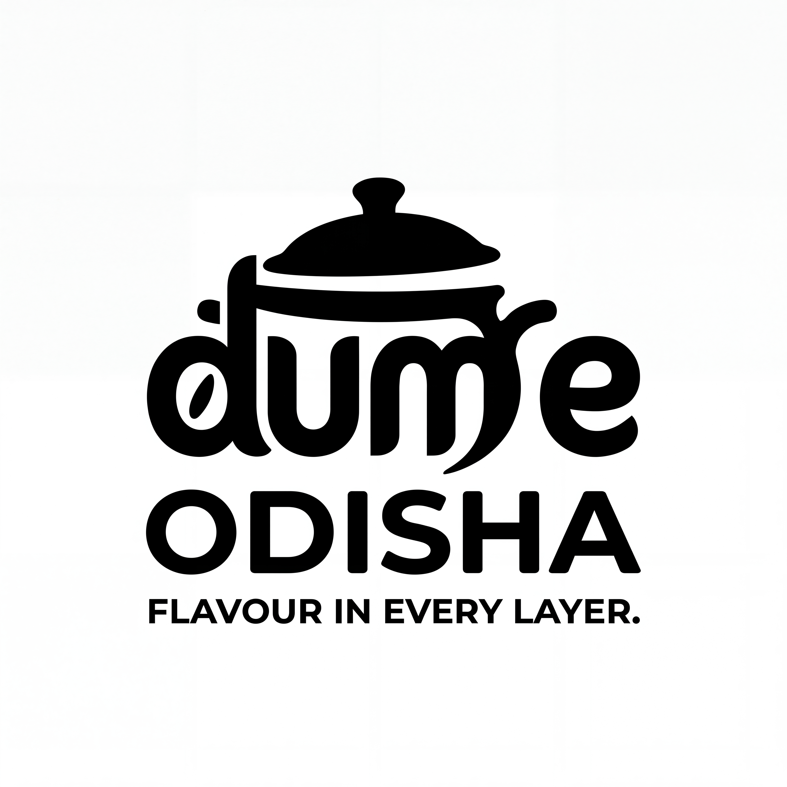
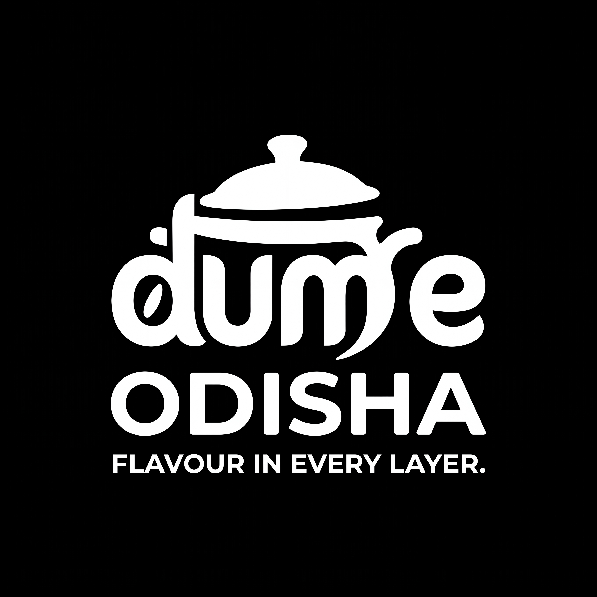
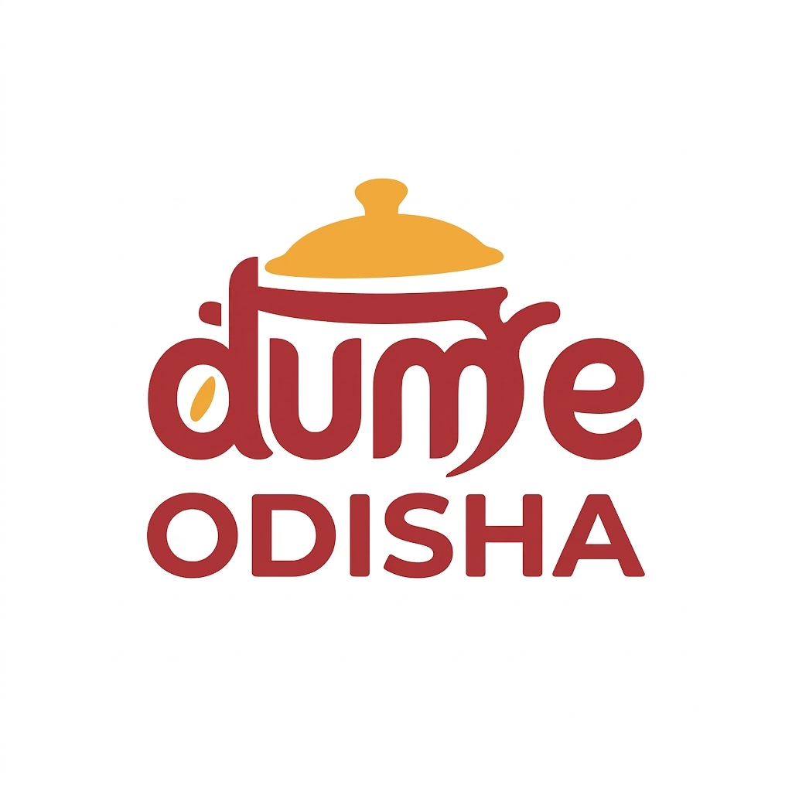

Use for launch graphics, larger packaging labels and clear brand introductions.
Download primary + tagline · JPEG · 4096 × 4096Flavour in Every Layer.
A warm, modern identity for authentic biryani in different flavours and varieties.
The complete name is Dum E Odisha. Odisha belongs to the brand name; biryani describes the offering.
Dum E Odisha brings authentic biryani, different flavours and variety together under one recognisable name. Use that clear offering rather than an invented heritage story.
Warm and appetising, like a meal set down to share. Substantial rounded letters communicate generosity; the cooking lid keeps the visual idea connected to food.
Keep the full name, custom dum e letters, large Odisha line, lid and rice-grain detail. Backgrounds and campaign layouts can change within the documented palette.
The user-selected pot-lid wordmark is the starting point. The revised artwork keeps its rounded dum e letters and rice-grain counter while promoting ODISHA into the main name.
Two logo inks: saffron for the lid and grain, chilli for the wordmark, Odisha and tagline.


Black and white proofs preserve the idea without relying on hue. These are generated usage variants, not mathematically identical vector paths.
Use for launch graphics, larger packaging labels and clear brand introductions.
Download primary + tagline · JPEG · 4096 × 4096
The full brand name without the tagline. Use where the tagline would become too small.
Download core logo · JPEG · 1024 × 1024Single-colour option for white backgrounds.
Download black · JPEG · 4096 × 4096Reversed single-colour option for black backgrounds.
Download white · JPEG · 4096 × 4096Use x = half the capital height of ODISHA. Reserve at least x around the complete artwork, measured from its outermost ink. The placement frame above is explanatory, not a reconstructed geometry grid.
Use the extended logo only where the tagline can be read. Switch to the supplied core logo at smaller sizes; retain the complete name. Never treat Odisha as a location footnote.
Use the colour artwork on its supplied white field. Use the reversed artwork on black. These files contain backgrounds, so avoid placing their rectangles directly over busy food photography.
Starting points for review: 400 px canvas width for the tagline version, 240 px for the core, and 128 px for a profile placement of the core file. These are conservative placement targets, not certified production minima. Do not use this full-name logo as a 16 px favicon.
Check the lettering at the actual printed or displayed size. If the tagline becomes a texture rather than readable words, choose the core file.
Do not stretch, rotate, crop the lid, retype the name, add a border, apply effects, recolour individual letters or reassemble the name. Use the exact supplied variants. Add truthful dish and category copy in the surrounding layout, outside clear space.
Logo letters and tagline; brand headings.
Lid and rice grain; larger accent areas.
Supporting text only.
Default field and negative space.
Optional warm application field.
Chilli carries the name; saffron carries the cooking lid and rice grain. White is the primary field. Ink and rice cream support layouts without introducing extra colours into the primary logo.
| Colour | HEX | RGB | Contrast on white | Supporting copy |
|---|---|---|---|---|
| Chilli | #A63825 | 166, 56, 37 | 6.53:1 | Body text suitable on white |
| Saffron | #ECAA35 | 236, 170, 53 | 2.03:1 | Background or larger accent; not small text on white |
| Ink | #2B211B | 43, 33, 27 | 15.72:1 | Body text suitable on white |
The documented values are colour targets. Nano Banana image pixels approximate them. CMYK and Pantone are not assigned: printed labels and substrates require a proof rather than an invented exact match.
Supporting display specimen · Georgia Bold
Flavour in
Every Layer.
Warm editorial headings in the guide and larger promotional layouts.
Supporting copy specimen · Arial Regular / Bold
Find your favourite biryani.
Different flavours. Generous moments.
Choose a dish, read the details, enjoy every layer.
Aa Bb Cc · 0123456789 · ₹ · 250 g · 500 g
Type specimens show hierarchy only; example quantities are not menu claims.
The logo is custom generated artwork, not a named font. Never recreate it in Georgia, Arial or a substitute. These supporting families use locally available system fonts with serif and sans-serif fallbacks; no font binaries are distributed.
| Role | Suggested scale | Weight / line height |
|---|---|---|
| Display heading | 40–64 px | Bold / 1.1 |
| Section heading | 28–36 px | Bold / 1.2 |
| Dish or label heading | 18–22 px | Bold / 1.3 |
| Description | 16 px | Regular / 1.6 |
Use an 8 px spacing rhythm, aligned text columns and generous outside margins. Keep the logo clear of dish names, prices and operational information. New utility icons should follow one consistent 24 px grid; no custom icon library is delivered in this revision.

Nano Banana presentation canvas. Container and carry-bag scenes demonstrate visual use only; their small artwork and colour are illustrative, not final print masters or packaging specifications.
Use the complete logo on the front. Keep dish name, portion information, customer details and any required operational labels in separate information areas. Keep flavour coding outside the logo rather than recolouring it for each dish.
Use the core file for compact introductions and the social profile; do not assemble a new mark. Reserve the tagline version for posts where it remains readable. Combine the logo with real product photographs; show generated food imagery only as clearly labelled concepts.
Give the full brand name clear space and make dish information easy to scan. Use a supplied monochrome file when needed. No specific storefront, menu or pricing claims are inferred from the brief.
Photograph actual biryani in warm natural light with visible grains and clear portions. Avoid fake steam, heavy filters or imagery that implies ingredients not present. Keep movement restrained: short fades and subtle interaction feedback; never bend the logo or animate individual letters into a new shape.
The tagline connects the layered dish with variety and flavour. Use this exact wording and spelling. It is the implemented line for this revision, not a claim of exclusive ownership.
“Dum E Odisha — Flavour in Every Layer.”
“Find your favourite biryani.”
“Different flavours. Made for sharing.”
Describe real dishes and ingredients. Keep the tone warm and direct. Do not invent royal recipes, sourcing stories, awards, cooking times or region-specific recipe claims.
Naming rule: write Dum E Odisha in running copy. In the supplied artwork, dum e and ODISHA use the selected display hierarchy. Biryani is category copy outside the brand name.
Four current logo files and one identity canvas are supplied. All visuals were generated through Nano Banana with the selected artwork as reference. JPEG backgrounds are included; no transparent files or editable vector masters are claimed.
The clean core file is 1024 × 1024; the tagline and monochrome versions are 4096 × 4096. The core mark and tagline version serve different sizes. Do not rebuild one from the other. Generated variants can show small contour differences; exact vector construction, press colour and tiny-icon behaviour remain future production work.
Revision 05 supersedes every earlier naming arrangement. The history page keeps previous images intact and explicitly labels them as superseded. Use only the corrected Dum E Odisha set for new customer-facing work.
Status: corrected identity revision for review. Visual spelling and overall form checked; local file references and download integrity checked. Actual-size display and print proofs remain required before production.
Eight-source skill audit and findings · Identity record · Shared Warmth design philosophy · Exact generation prompts
The established name and selected logo remain the fixed brief. The guide applies practical specification, palette, typography and source-preservation guidance from all eight supplied skill sources. It does not invent competitor validation, a full founder workshop, a font licence or a production certificate.